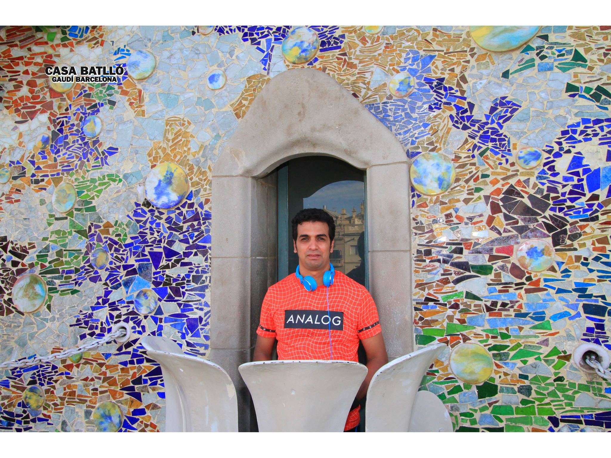

Home
About Me as Web developer
Contact
Work

Hello World!
My name is Emil Megalla. I am a
web
developer from Australia.
Check out some of my code.
Great design without functionality is like a sport car with no engine.
A web developer and freelance photographer with a diverse work background in hospitaliy, retails. security and facility managemtn.